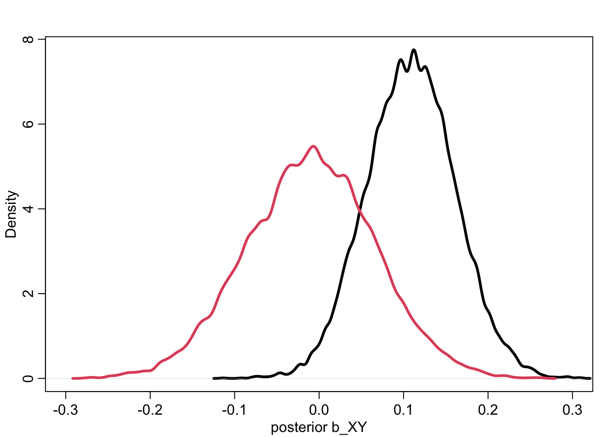

We’re going to talk today about things that happen during the estimator that can cause issues with our estimate.
Assocation & Causation
Statistical recipes must defend against confounding, which is a feature of the sample and how we use it that misleads us
The Fork
Z is a common cause of X and Y: X & Y are associated because they share the common cause Z. Once stratified by Z, there’s no association between X and Y - so, at each level of Z, X and Y are independent (not associated) with one another.
in the above example, you can see that at z values of 0 or 1 X and Y aren’t correlated (correlation is out of 1, above 0.3 typically considered correlated)
so, example: why do regions of the USA with higher rates of marriage also have higher rates of divorce? Does marriage cause divorce?
estimand is causal effect of marriage on divorce
(points of the scatter plot not showing up)
to stratify by A (age at marriage) include as term in linear model
it is often conveneient to standardize by the mean in linear regression. standardizing means subtract mean and divide by standard deviation - it makes it easier to choose sensible prior and makes computation work better.
The above code produces this ^ which is bad - they’re totally different, the slopes are too extreme,
better priors:
I think this below is plotting the priors which can be useful?
The slope is not the causal effect of M - that’s often reported but it’s not quite right. We’re going to do it the principled way which works when we get to more complex models. We do a simulation:
we play god on M - we delete the arrows going into M to simulate the causal effect of M on D
the guess from the above is that M on D is a lot smaller than A on D
but you still need to to estimate causal effect of A:
The Pipe
there was also a Pipe in the above example. let’s look at that now.
statistically the pipe and the fork look the same but causally they’re very different so we need to think about them differently. so if we stratified by Z there would be no association between Y and X again - because all the association is transmitted through the effect of X on Z
EVERYTHING THAT Y KNOWS ABOUT X IS ALREADY KNOWN BY Z.
Example of a pipe:
sometimes ppl think if they’re doing a controlled experiment you don’t have to bother with all this confound stuff but that’s WRONG:
Scientific Model:
then we introduce our treatment: plant could be directly affected by the treatment (hurt or help) but for sure hopefully treatment will affect fungus.
If we want to know the total causal effect of T on H, we DON’T want to stratify by F because we want the total causal effect here to know if we should use the treatment or not.
Sometimes you DO want to stratify by the mediator if you want to know the direct effect - that just isn’t the case here!
Another example: POST-TREATMENT BIAS
if you stratify by the consequence of the treatment, you can induce post-treatment bias - mislead you that it doesn’t work, or that it does work. Rule of thumb: consequences of the treatment should not usually be included in the estimator. there are exceptions to this - things you measure during the experiment sometimes do need to be included.
it can often be dangerous to stratify by
The Collider
The collider is where Z is jointly caused by both x and y. X and Y are NOT associated, they’re independent of one another - but bc they both influence Z, once stratified by Z, X and Y look VERY associated.
the strong associations could read as causal, so there’s a risk of thinking something else is going on, like a fork.
they appear for a variety of reasons:
some already arise from selection: suppose there are 200 research grant applications, scored both on newsworthiness and trustworthiness. let’s say they’re totally unrelated to one another. then we could think about the ones that are funded - if they’re sufficiently newsworthy and/or trustworthy they could both be funded. once you stratify by whether they’re funded or not there’s a strong association between trustworthiness and newsworthiness but in reality the two are not associated:
points not showing on graph again
other examples:
restaurants survive by having good food or a good location - bad food in good locations
actors can succeed by being attractive or by being skilled - attractive actors are less skilled.
endogenous colliders - colliders can also arise through your analysis via endogenous selection: if you stratify by a collider, it creates phantom non-causal associations.
example: does age influence happiness? Possible confound here is marital status. suppose age has zero influence on happiness but that both age and happiness influence marital status (happier ppl more likely to get married) (older you are more likely you are to get married)
The Descendent
descendent is easy - it’s a parasite on the other three: how it behaves is dependent on what it’s attached to
because Z is the parent of A, A holds information about Z - so if you stratified by A, it would reduce the measured association between X and Y. but A is actually not causally associated with X or Y
descendents are SUPER COMMON - many measurements are proxies of what we actually want to measure:
factor analysis, measurement error, social networks - the things we’re measuring are not the thing we’re wanting to measure, but they contain information about the unobserved things.
They’re both dangerous AND useful.
Lecture 6 - Good & Bad Controls
Try to avoid being clever - that’s unreliable and opaque! we should instead be as boring as possible - reliant, transparent, logical procedures to derive implications that others can use to verify and challenge our work. We’re going to work on developing those tools more in this lecture.
We want a framework to take the confounds and do something with them. We think about a treatment X on a Y outcome and the issue of a common cause U that may or may not be measured but usually isn’t. Our best bet if we can is to randomize the treatment to remove its link with U - but that often doesn’t work, especially with observational studies. we also can attempt to randomize but it doesn’t always work all the way - there can still be a partial influence of U:
Is there a statistical procedure that we can use to mimic randomization on X?
we’re not going to learn this in a detailed mathematical way but this is useful for a lot of causal models so we wanna talk about it. So in a simple example with a simple confound, we can deal with the confound here by stratifying by U if we can measure it because it’s a fork:
to look at the causal effect of X on Y, intervene on X to get “The distribution of Y, stratified by X and U, averaged over the distribution of U”
example:
for DAGs, rules for finding P(Y|do(X)) are known s do-calculus (not calculus, just the calculations). do-calculus has two perspectives: it’s kind of the worst-case scenario, additional assumptions often allow stronger inference. do-calculus is also kind of a best case scenario - if inference is possible by do-calculus, it does not depend on special assumptions.
Backdoor criterion
The Backdoor criterion is a shortcut to apply some results of do-caculus. it’s a rule to find a set of variables to stratify by to yield P(Y|do(X))
3 steps (with example in photos)
identify all paths connecting the treatment X to the outcome Y
Paths with arrows ENTERING X are backdoor paths
find the adjustment set that block or close all backdoor paths:
To simulate that confounded Y:
library(rethinking)
Loading required package: cmdstanr
This is cmdstanr version 0.8.1.9000
- CmdStanR documentation and vignettes: mc-stan.org/cmdstanr
Warning: package 'posterior' was built under R version 4.4.2
This is posterior version 1.6.0.9000
Attaching package: 'posterior'
The following objects are masked from 'package:stats':
mad, sd, var
The following objects are masked from 'package:base':
%in%, match
Loading required package: parallel
rethinking (Version 2.42)
Attaching package: 'rethinking'
The following object is masked from 'package:stats':
rstudent
N <-200b_XY <-0b_UY <--1b_UZ <--1b_ZX <-1set.seed(10)U <-rbern(N)Z <-rnorm(N,b_UZ*U)X <-rnorm(N,b_ZX*Z)Y <-rnorm(N,b_XY*X+b_UY*U)d <-list(Y=Y, X=X, Z=Z)#now run linear regressions#ignore U,Zm_YX <-quap(alist( Y ~dnorm(mu, sigma), mu <- a + b_XY*X, a ~dnorm(0,1), b_XY ~dnorm(0,1), sigma ~dexp(1) ), data = d)#stratify by Zm_YXZ <-quap(alist( Y ~dnorm(mu, sigma), mu <- a + b_XY*X + b_Z*Z, a ~dnorm(0,1),c(b_XY, b_Z) ~dnorm(0,1), sigma ~dexp(1) ), data = d) post <-extract.samples(m_YX)post2 <-extract.samples(m_YXZ)dens(post$b_XY, lwd=3, col=1, xlab ="posterior b_XY", xlim=c(-0.3, 0.3))dens(post2$b_XY, lwd=3,col=2, add=TRUE)

More complicated example of a backdoor criterion:
we’re looking for a statistical to delete the arrows into X. you list all the paths connecting treatment X to outcome Y:
you look at each of these paths and realize that you need to add Z, C, and or or B to the “adjustment set”
you can use a tool to help you do this: www.daggitty.net
you can draw DAGs on your screen, then have it help you figure out the adjustment set.
analyze this using the backdoor criterion:
Summarizing backdoor criterion:
do-calc is more than backdoors and adjustment sets. full luzury Bayes uses all variables but in separate sub-models instead of single regression. do-calc is less demanding - finds relebant variables saves us having to make some assumptions, not always a regression.
Good & Bad Controls
Control variable is a variable introduced to an analysis so that the causal estimate is possible. you can pick ones that ruin perfectly fine designs.
there are some common bad ways to pick em:
don’t just add anything in the spreadsheet and see if it’s significant!! BAD!!!
don’t include any variables that are highly collinear - collinearity can arrive through a lot of different causal processes, you need to analyze that to know if it’s good to control for them
pick any pre-treatment measurement - also bad
DON’T DO THAT!
in the example above, the hobbies of two people influence their health but also might influence if they’re friends or not. if we do stratify by the fact that they’re friends we’re missing something about those unobserved variables (there’s colliders in there?)
the backdoor paths are closed - if we stratify by Z, we open them, that’s then an issue:
in this case we don’t stratify by Z!
another example:
there are a bunch of things that affect both happiness and lifespan - those things are fine until you try to stratify by happiness - then they’re an issue!!
if you add Z as a control you could TURN ON A CONFOUND!
STATISTICAL SIGNIFICANCE IS NOT A JUSTIFICATION FOR MODEL STRUCTURE! YOU NEED A CAUSAL MODEL TO JUSTIFY YOUR RESULTS!
another example:
but colliders not always so easy to spot:
ok when it comes to descendents:
VERY BAD to add descendents as controls. selecting on the outcome is the most powerful way to ruin scientific inference
don’t stratify by income because if you do there’s a narrower range of occupations and education and it will look like there isn’t as much of an effect
another example, now let’s look at a parent of X:
there are no backdoors, but it’s still not good to condition on Z - if you stratify by Z there’s less variation in X and it will reduce the precision of my estimate of the effect of X on Y
in the above it’s centered on the correct value but there’s a lot more uncertainty than if you did the correct model which is just y~x!
Now bias amplification example:
let’s add an unobserved counfound btwn x and y
adding Z amplifies the bias?
there’s already in the black model a bias away from the true value 0 - when you stratify by Z it amplifies it. to look at effect of X on Y you want to know where they both vary. within each level of Z there’s less variation in X, and there’s relatively more importance of the confound u in each level of Z